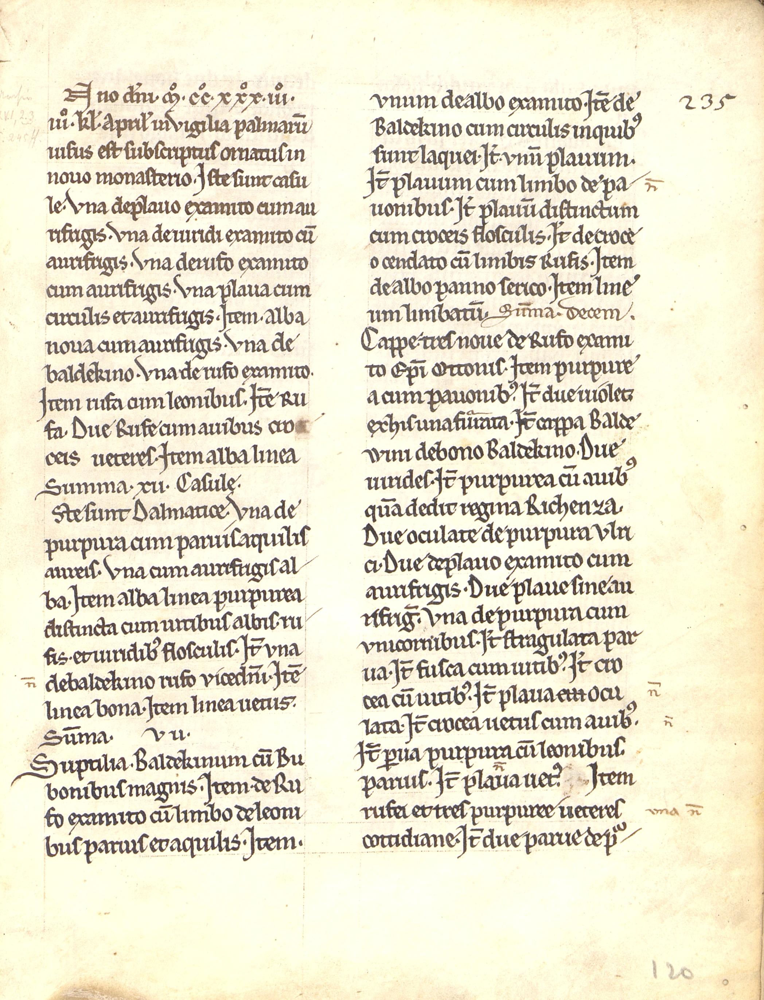

StaWue, Standbuch, 184



Kommentar
StaWue, Standbuch 184
Liste von Ornatsbestandteilen1233 (Stift Neumünster, Würzburg)
Liste von Ornatsbestandteilen1233 (Stift Neumünster, Würzburg)
Archivaliengattung: Standbuch
Schwierigkeitsgrad: leicht
Schreiberhände:
- unbekannter Schreiber 1 (S1)
- unbekannter Schreiber 2 (S2)
- unbekannter Schreiber 3 (S3)
- unbekannter Schreiber 4 (S4)
- unbekannter Schreiber 5 (S5)
Der Liber censualis listet ein Inventar im Stift vorhandener Gegenstände auf. Die hier gezeigte Seite versammelt vorhandene Teile des geistlichen Ornats mit kurzer Beschreibung von Farbe, Motivik, Machart und teils auch der Herkunft.
Bei der Schrift handelt es sich um eine gotische Minuskel. Für diese Schrift typisch sind die Brechungen der Rundbögen bei o, c, e und den runden Bestanteilen von a, b, d, g, p, q, s sowie den bogigen Verbindungen in m, n und u.
An den Seitenrändern finden sich Anmerkungen einer später durchgeführten erneuten Inventur, wobei in der Zwischenzeit anscheinend einige Stücke abhanden gekommen zu sein scheinen: ein gekürztes n(on) gibt das Fehlen der Betroffenen Ornatsteile an. Die Bestandteile des Ornats scheinen sehr prachtvoll ausgeführt gewesen zu sein, so ist u.a. von gefärbten und Seidenstoffen (examentum), Goldverzierungen und Tierdarstellungen auf den Textilien zu lesen. Teils wird auch die Herkunft der Stücke berichtet, etwa drei Kappen (umhangartige Mäntel) aus rotem Seidenstoff, die zuvor Bischof Otto gehört haben (rechte Spalte, Zeile 10) oder eine Kappe aus purpurnem Stoff mit Adlerdarstellungen, die die Königin Richenza (ca. 1087-1141) dem Stift zukommen ließ (rechte Spalte, Zeile 14-16).
Bei der Schrift handelt es sich um eine gotische Minuskel. Für diese Schrift typisch sind die Brechungen der Rundbögen bei o, c, e und den runden Bestanteilen von a, b, d, g, p, q, s sowie den bogigen Verbindungen in m, n und u.
An den Seitenrändern finden sich Anmerkungen einer später durchgeführten erneuten Inventur, wobei in der Zwischenzeit anscheinend einige Stücke abhanden gekommen zu sein scheinen: ein gekürztes n(on) gibt das Fehlen der Betroffenen Ornatsteile an. Die Bestandteile des Ornats scheinen sehr prachtvoll ausgeführt gewesen zu sein, so ist u.a. von gefärbten und Seidenstoffen (examentum), Goldverzierungen und Tierdarstellungen auf den Textilien zu lesen. Teils wird auch die Herkunft der Stücke berichtet, etwa drei Kappen (umhangartige Mäntel) aus rotem Seidenstoff, die zuvor Bischof Otto gehört haben (rechte Spalte, Zeile 10) oder eine Kappe aus purpurnem Stoff mit Adlerdarstellungen, die die Königin Richenza (ca. 1087-1141) dem Stift zukommen ließ (rechte Spalte, Zeile 14-16).
Entzifferung
(Absatz Beginn)
1
2 [linke Spalte] (unbekannter Schreiber 1:) [A]Nnoa) d(omi)ni M°.CC°.XXX°.III°.
3 III°. K(a)l(endas) April(is) in Vigilia palmaru(m)
4 uisus est subscriptus ornatus in
5 nouo monasterio. Iste sunt casu
6 le. Vna de plauo examito cum au
7 rifrigis. Vna de uiridi examito cu(m)
8 aurifrigis. Vna de rufo examito
9 cum aurifrigis. Vna plaua cum
10 circulis et aurifrigis. Item alba
11 noua cum aurifrigis. Vna de
12 baldekino. Vna de rufo examito.
13 Item rufa cum leonibus. Ite(m) Ru
14 fa. Due Rufe cum auibus crob)
15 ceis ueteres. Item alba linea
16 Summa .XII. Casule.
17 [I]stec) sunt Dalmatice. Vna de
18 purpura cum paruis aquilis
19 aureis. Vna cum aurifrigis al/
20 ba. Item alba linea purpurea
21 distincta cum uitibus albis. ru
22 fis. et uiridib(us) flosculis. It(em) vna
23 (unbekannter Schreiber 2:) n(on)(Links nachgetragener Text)d)(unbekannter Schreiber 1:) de baldekino rufo viced(omi)ni. Ite(m)
24 linea bona. Item linea uetus.
25 Sum(m)a .VII.
26 Suptilia. Baldekinum cu(m) Bu
27 bonibus magnis. Item de Ru
28 fo examito cu(m) limbo de leoni
29 bus paruis et aquilis. Item.
30 [rechte Spalte] vnum de albo examito. Ite(m) de (unbekannter Schreiber 3:) 235(Rechts nachgetragener Text)e)
31 (unbekannter Schreiber 1:) Baldekino cum cirulis in quib(us)
32 sint laquei. It(em). vnu(m) plauum.
33 It(em) plauum cum limbo de pa/ (unbekannter Schreiber 2:) n(on)(Rechts nachgetragener Text)f)
34 (unbekannter Schreiber 1:) uonibus. It(em) plauu(m) distinctum
35 cum croceis flosculis. It(em) de croce/
36 o cendato cu(m) limbis Rufis. Item
37 de albo panno serico. Item line/
38 um limbatu(m). (unbekannter Schreiber 5:) Sum(m)a Decem.
39 (unbekannter Schreiber 1:) Cappe. tres noue de Rufo exami
40 to E(pisco)pi Ottonis. Item purpure/
41 a cum pauonib(us). It(em) due uiolet[e] g)
42 ex his una fur(ur)ata. It(em) cappa Balde/
43 wini de bono Baldekino. Due
44 uirides. It(em) purpurea cu(m) auib(us)
45 qua(m) dedit regina Richenza.
46 Due oculate de purpura Vlri
47 ci. Due de plauo examito cum
48 aurifrigis. Due plaue sine au
49 rifrig(is). Vna de purpura cum
50 vnicornibus. It(em) stragulata par
51 ua. It(em) fusca cum uitib(us). It(em) cro
52 cea cu(m) uitib(us). It(em) plaua cui ocu (unbekannter Schreiber 2:) n(on)(Rechts nachgetragener Text)h)
53 (unbekannter Schreiber 1:) lata. It(em) crocea uetus cum auib(us). (unbekannter Schreiber 2:) n(on)(Rechts nachgetragener Text)i)
54 (unbekannter Schreiber 1:) It(em) p(ar)ua purpura cu(m) leonibus.
55 paruis. It(em) plaua (unbekannter Schreiber 2:) n(on)(Über der Zeile nachgetragener Text)j)(unbekannter Schreiber 1:) uet(us).k) Item
56 rufei et tres purpuree ueteres (unbekannter Schreiber 2:) vna n(on)(Rechts nachgetragener Text)l)
57 (unbekannter Schreiber 1:) cottidiane. It(em) due parue de p(laua)m) /
58 (unbekannter Schreiber 4:) 120(Rechts nachgetragener Text)n)
(Absatz Ende)
a) die A-Initiale wurde nicht ausgeführt
b) hier wurde wohl etwas getilgt
c) die I-Initiale wurde nicht ausgeführt
d) Vermerk einer späteren Inventur
e) Vermerk einer späteren Inventur
f) Vermerk einer späteren Inventur
g) Kürzungszeichen undeutlich, muss "uiolete"(Textzitat) heißen
h) Vermerk einer späteren Inventur
i) Vermerk einer späteren Inventur
j) die hochgestellte Abkürzung muss "n(on)"(Textzitat) heißen
k) vor "Item"(Textzitat) offenbar eine Tilgung
l) Vermerk einer späteren Inventur
m) Abkürzung nicht eindeutig, vermutlich "p(lau)a"(Textzitat)
n) nachträgliche Foliierung oder Paginierung
Transkription
(Absatz Beginn)
1
2 [linke Spalte] (unbekannter Schreiber 1:) [A]nnoa) domini M°.CC°.XXX°.III°.
3 III°. Kalendas Aprilis III vigilia palmarum
4 visus est subscriptus ornatus in
5 novo monasterio. Iste sunt casu-
6 le. Una de plavo examito cum au-
7 rifrigis. Una de rufo examito
8 cum aurifrigis. Una plava cum
9 circulis et aurifrigis. Item alba
10 nova cum aurifrigis. Una de
11 baldekino. Una de rufo examito.
12 Item rufa cum leonibus. Item ru-
13 fa. Due rufe cum avibus cro-b)
14 ceis veteres. Item alba linea
15 Summa .XII. Casule.
16 [I]stec) sunt dalmatice. Una de
17 purpura cum parvis aquilis
18 aureis. Una cum aurifrigis al-
19 ba. Item alba linea purpurea
20 distincta cum vitibus albis, ru-
21 fis, et viridibus flosculis. Item una
22 (unbekannter Schreiber 2:) non(Links nachgetragener Text)(unbekannter Schreiber 1:) de baldekino rufo vicedomini. Item
23 linea bona. Item linea vetus.
24 Summa .VII.
25 Suptilia. Baldekinum cum bu-
26 bonibus magnis. Item de ru
27 fo examito cum limbo de leoni-
28 bus parvis et aquilis. Item.
29 [rechte Spalte]unum de albo examito. Item de (unbekannter Schreiber 3:) 235(Rechts nachgetragener Text)
30 (unbekannter Schreiber 1:) baldekino cum cuxulis in quibus
31 sint laquei. Item unum plavum.
32 Item plavum cum limbo de pa- (unbekannter Schreiber 2:) non(Rechts nachgetragener Text)
33 (unbekannter Schreiber 1:) vonibus. Item plavum distinctum
34 cum cruceis flosculis. Item de croce-
35 o cendato cum limbis rufis. Item
36 de albo panno serico. Item line-
37 um limbatum. (unbekannter Schreiber 5:) Summa decem.
38 (unbekannter Schreiber 1:) Cappe tres nove de rufo exami-
39 to episcopi Ottonis. Item purpure-
40 a cum pavonibus. Item due violet
41 ex his una fururata. Item cappa Balde-
42 wini de bono baldekino. Due
43 virides. Item purpurea cum avibus
44 quam dedit regina Richenza.
45 Due oculate de purpura Ulri-
46 ci. Due de plavo examito cum
47 aurifrigis. Due plava sine au-
48 rifrigis. Una de purpura cum
49 unicornibus. Item strangulata par-
50 va. Item fusca cum vitibus. Item cro-
51 cea cum vitibus. Item plava ocu- (unbekannter Schreiber 2:) non(Rechts nachgetragener Text)
52 (unbekannter Schreiber 1:) lata. Item crocea vetus cumd) avibus. (unbekannter Schreiber 2:) non(Rechts nachgetragener Text)
53 (unbekannter Schreiber 1:) Item parva purpura cum leonibus.
54 parvis. Item plava vetus. e) Item
55 rufei et tres purpuree veteres (unbekannter Schreiber 2:) una non(Rechts nachgetragener Text)
56 (unbekannter Schreiber 1:) cottidiane. Item due parve de plava
57 (unbekannter Schreiber 4:) 120(Rechts nachgetragener Text)
(Absatz Ende)
a) die A-Initiale wurde nicht ausgeführt
b) hier wurde wohl etwas getilgt
c) die I-Initiale wurde nicht ausgeführt
d) hier wurde "cui"(Textzitat) gestrichen
e) vor "Item"(Textzitat) offenbar eine Tilgung